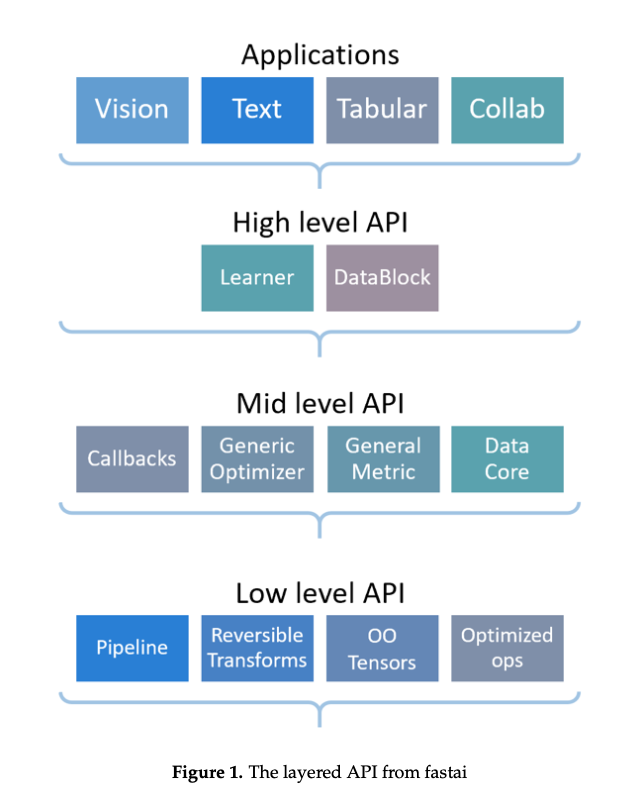

fastai: A Layered API for Deep Learning
The paper is longer than I want to spend reading in depth, so I will try to skim intelligently and spend about 5 days on this paper. The abstract generally will call out the important points from the perspective of the authors, and from this abstract, it appears important the various levels of abstraction, the ease for new programmers, and the novel 2-way callback system.
Design Goals approachable and rapidly productive. With the multi-tiered API format, the authors believe to have successfully met their design goals. Two competitors to the library they call out as Keras and PyTorch which each have their own benefits in approachability and expressivity.
Fig1 shows the layers of the API abstractions:

The authors explain each of the layers
High Level is made for beginners and practitioners who are using deep learning in applications where it has successfully been applied before. Though it is able to derive state of the art results, its is going to be generally not surpassing the SOTA. The high level abstraction is intelligent as it is able to detect the best loss function for instance. The pros are this can be fairly good for getting good early results, but can lead to practitioners not understanding exactly what is going on with their models.
Mid Level provides the core of the deep learning methods. Built on previous optimized libraries, the underlying code is not hidden or protected from the user so they can dive in themselves and adjust code as needed.